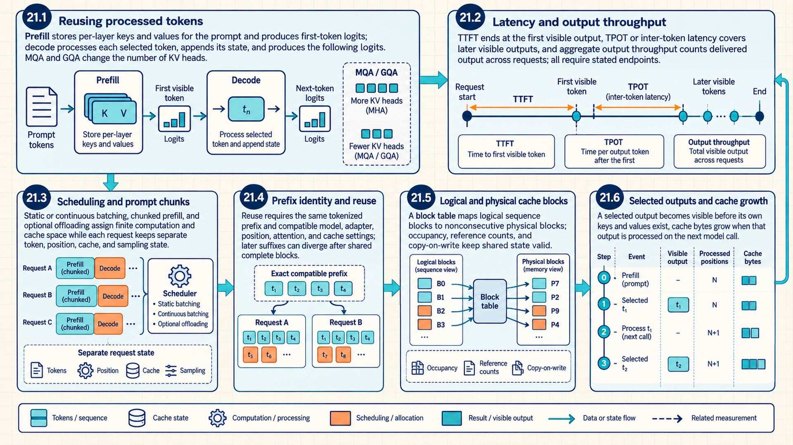
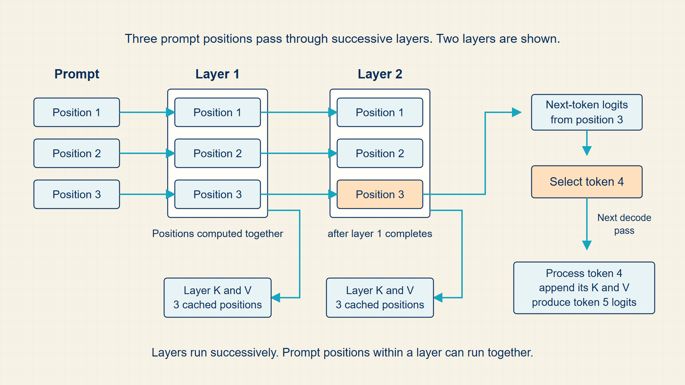
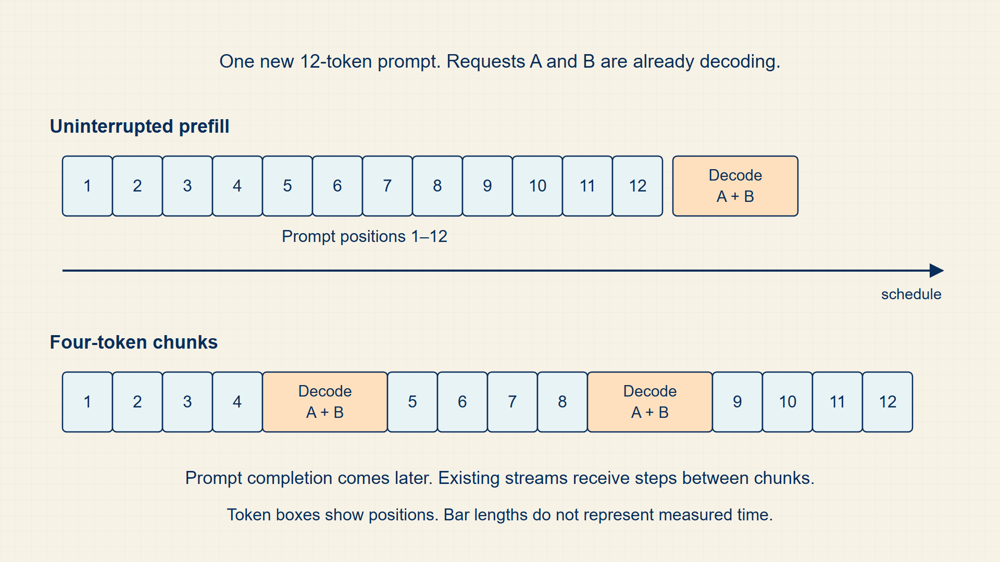
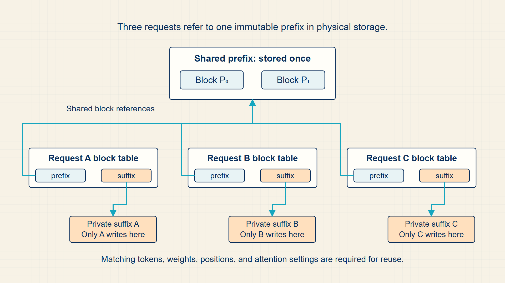
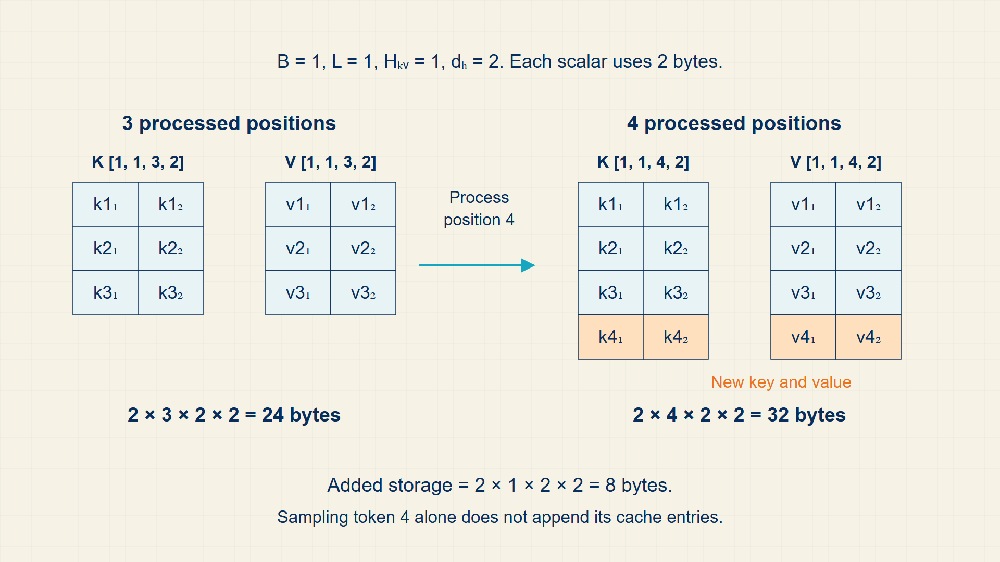

21 KV cache: Generation state, latency, and allocation
Generation needs consistent token and cache state, allocation, and scheduling before its memory and request latency can be assessed.
Autoregressive generation repeatedly extends a prefix while model parameters stay fixed. Retaining earlier attention keys and values avoids repeating their computation, but the stored state grows with the processed sequence. Multiple requests must share finite memory and computation without mixing their contexts.

21.1 Reusing processed tokens and sharing key-value heads
Under §16.3’s causal visibility rule, a decoder’s earlier positions cannot read a newly appended token. Their attention keys and values therefore remain reusable when the model parameters and relevant execution settings stay fixed. Recomputing those earlier states would repeat work already done.
The KV cache stores these attention keys and values for each layer and request. Prefill processes the supplied prompt, creates its cache entries, and produces logits at prompt positions. The last position’s logits supply the first next-token decision.
Selecting that first token does not immediately add its keys and values to the cache. The next forward call processes the selected token with the earlier cache. It computes the token’s new query, key, and value at each layer, appends its key and value, and produces logits for the following token. This repeated processing is the decode phase.

The prefill image describes parallel prompt processing but incorrectly labels all layers as parallel. Positions can share operations within a layer. Later layers still require earlier outputs. The first-token logits follow the final prompt computation, not a separate model pass after prefill.
Within a layer, the new query reads the cached keys and its own newly computed key using §16.1’s score normalization and value mixture. The resulting coefficients mix earlier values and the new value.
A prefix cache additionally allows compatible requests to reuse already processed shared prompt prefixes. Section 21.4 develops that cross-request use. The per-request cache here is neither a cache of logits nor a complete archive of hidden states. Earlier queries are not needed for the next query’s attention, so they are not retained as KV entries.
For one layer, key and value arrays each have shape
\[ K,V\in\mathbb{R}^{B\times H_{\mathrm{KV}}\times T\times d_h} \tag{21.1}\]
Here \(B\) counts requests, \(H_{\mathrm{KV}}\) counts key-value heads, \(T\) is the stored position width, and \(d_h\) is head width. For equal-length unpadded requests, \(T\) equals the processed length retained. Unequal requests can use a rectangular padded layout: added slots count toward storage, but attention must exclude them as readable keys using §2.2’s validity information and §16.3’s visibility rule. §8.5’s target exclusion is a separate training loss rule. The block mapping introduced later in §21.5 instead allocates storage for each request’s processed positions.
Section 17.2 defined multiple learned query heads. Ordinary multi-head attention, abbreviated MHA, gives every query head its own key and value head. Multi-query attention, MQA, shares one key-value head across all query heads. Grouped-query attention, GQA, assigns several query heads to each shared key-value head.1
Let the query-head count be \(H_Q\). MHA uses \(H_{\mathrm{KV}}=H_Q\), MQA uses \(H_{\mathrm{KV}}=1\), and an intermediate GQA choice uses \(1<H_{\mathrm{KV}}<H_Q\). Equal groups require \(H_Q\) divisible by \(H_{\mathrm{KV}}\). Query heads retain separate scores and value mixtures even when they share the stored key/value projections.
This changes the model’s projection arrangement, not merely the name of a cache tensor. Converting a trained checkpoint needs an appropriate weight-conversion and training procedure, with quality evaluated afterward. Fewer stored heads reduce ideal cache payload but do not establish identical quality or a universal speed ratio.
For \(L\) layers, the ideal cache payload is
\[ \mathrm{bytes}=2\cdot L\cdot B\cdot H_{\mathrm{KV}}\cdot T\cdot d_h\cdot s \tag{21.2}\]
The factor 2 counts keys and values, and \(s\) is bytes per stored scalar. Multiplying layers, requests, KV heads, positions, width, and scalar size counts every stored entry once.
The corresponding growth is
\[ \Delta\mathrm{bytes}_{\mathrm{per\ token}}=2LBH_{\mathrm{KV}}d_hs \tag{21.3}\]
With the factor \(B\), this increment describes adding one processed position to every request in that equal-length batch. Adding a position to only one request uses the same expression with \(B=1\).
Example: Selection before the next cache append
Take one request, one layer, one KV head, width two, and a three-token prompt. After prefill, each cache tensor has shape \([1,1,3,2]\). At two bytes per scalar, both tensors together use \(2(1)(1)(3)(2)(2)=24\) bytes.
The final prompt logits select token four. At this moment the cache still covers three processed tokens. If generation continues, the next call processes token four and appends its key and value. Both arrays become \([1,1,4,2]\), totaling \(2(1)(1)(4)(2)(2)=32\) bytes.
The new query reads four key positions and produces logits for token five. If the selected fourth token already triggers stopping, processing it again may be unnecessary.
Conclusion: The increase from 24 to 32 bytes occurs when the selected token is processed. The last selected output can therefore exist before its cache entry. Selection and cache growth are distinct events.
The runnable Python function below computes ideal key-plus-value payload and converts bytes to GiB by dividing by \(1024^3\). It is an arithmetic estimate, not a serving benchmark.
Code example: A simple KV-cache memory estimate
def kv_cache_gib(
layers, batch, kv_heads, seq_len, head_dim,
bytes_per_value=2,
):
bytes_total = (
2 * layers * batch * kv_heads * seq_len
* head_dim * bytes_per_value
)
return bytes_total / 1024**3
print(
kv_cache_gib(
layers=32, batch=1, kv_heads=8,
seq_len=8192, head_dim=128,
)
)For 32 layers, one request, 8 KV heads, 8,192 processed positions, width 128, and two-byte values, it returns 1.0 GiB. Keep eight query heads in a separate comparison. Using two KV heads gives 0.25 GiB, while one KV head gives 0.125 GiB. The other dimensions and scalar size remain fixed.
Those ratios concern only KV payload. They exclude model parameters, allocation overhead, unused block capacity, temporary activations, and scheduler state. Head sharing still computes each query head’s attention result. Each new query also reads earlier keys and values, so its attention work grows with retained context length.
transformers model calls can expose this state through past_key_values, and model.generate manages repeated selection and calls. Serving engines additionally manage allocation and request scheduling. Their latency depends on workload, numerical format, and hardware as well as the cache size.
21.2 Request latency and aggregate output throughput
A user waiting for the first output experiences a different delay from a user waiting between later tokens. Counting tokens across many simultaneous requests answers a third question: how much total output the system delivers per unit time.
TTFT, time to first token, measures the interval from a declared request-start event to its first visible output. A client-side measure can include network transfer, queueing, input preparation, prefill, selection, and delivery. A server-only measurement excludes some of these intervals and must state its endpoints.2
For a simplified server-side illustration, define request arrival after input preparation as the start. Let the endpoint be delivery of the first selected token at the server boundary:
\[ \mathrm{TTFT}=\mathrm{queue\ time}+\mathrm{prefill\ time}+\mathrm{selection/delivery\ time} \tag{21.4}\]
Queue time ends when model processing starts. Prefill ends when the prompt computation supplies first-token logits. Selection and delivery then turn those logits into the first output at the chosen boundary. These non-overlapping terms cover this illustrative interval. A real instrument must account for additional work or overlap rather than infer phases from their names.
Example: First-token timing under a specified boundary
Choose queue time 8 ms, prefill time 20 ms, and selection/delivery time 5 ms. The total is \(8+20+5=33\) ms. The final 5 ms is an illustrative postprocessing assumption, not an additional transformer forward pass or a measured component.
Conclusion: Prefill already supplies the first-token scores. The selected output becomes visible after the remaining selection and delivery work. The sum describes only the stated timing boundary.
TPOT, time per output token, averages a request’s elapsed time after its first token over the remaining output tokens. Let \(t_1\) and \(t_N\) be first and last token-receipt times for a request producing \(N>1\) tokens:
\[ \mathrm{TPOT}_{\mathrm{request}}=\frac{t_N-t_1}{N-1},\quad N>1 \tag{21.5}\]
The denominator is \(N-1\), because the interval begins after the first token. Equivalently, the numerator is end-to-end latency minus TTFT when both share consistent start and end boundaries. A one-token response has no post-first-token interval and therefore no defined TPOT under this convention.
For a separate request with end-to-end latency 180 ms, TTFT 100 ms, and five output tokens, TPOT is \((180-100)/(5-1)=20\) ms per token. The four later token intervals average 20 ms. This says nothing about the number of other requests served concurrently.3
Inter-token latency measures individual gaps between received output events. If one event contains several tokens, event gaps and the token-based TPOT denominator count different things. A report must identify whether its timestamps belong to tokens or streamed chunks.
Output throughput divides the aggregate number of output tokens by elapsed observation time. Suppose a batch of concurrent requests produces 40 tokens in 200 ms. The output throughput is \(40/0.2=200\) tokens per second, whose reciprocal is 5 ms per aggregate token. This reciprocal is not one request’s TPOT.
For example, four requests could each produce one token at synchronized events 20 ms apart, yielding 200 tokens per second in steady state. Each request would still wait 20 ms between its tokens. The same aggregate rate can accompany other individual delays.
Prefill often exposes large matrix operations across prompt positions. Small-batch decode can spend much of its time reading model weights and the growing cache. The dense-weight approximation behind §19.4 gives about \(2N_{\mathrm{param}}\) floating-point operations for one new token’s forward pass when \(N_{\mathrm{param}}\) participating weights each contribute a multiply and an add. Reading earlier attention keys and values adds context-dependent work, so \(2N_{\mathrm{param}}\) is not the complete cost of a long-context step.
Memory traffic can impose a separate lower bound on latency. For a batch of one, suppose each of 7 billion dense weights must be read once from a memory tier and is stored in two bytes. That is about 14 billion bytes of weight traffic per decode step. At an assumed bandwidth of one trillion bytes per second, the transfer alone takes at least \(14\times10^9/10^{12}=0.014\) seconds, or 14 ms. Other reads, arithmetic, launch and scheduling time can increase latency. Batching can reuse a weight read across several requests, while a different storage format changes the byte count. This estimate is a conditional bound, not a measured token latency. Both phases include computation, memory access, and scheduling costs.
A latency report should retain prompt and output lengths, concurrency, arrival pattern, cache-hit conditions, hardware, model configuration, and failures. Means can hide long waits, so percentiles and per-request records matter. A service might set a 3-second TTFT target and a 100–300 ms interval between output tokens. Those objectives need a stated workload and are not measured results here.
The distinct metrics expose who waits when the scheduler moves work. The next section follows that scheduling choice without assuming a universal best batch size.
21.3 Request scheduling, prompt chunks, and offloaded state
A long arriving prompt can occupy the accelerator while existing requests wait for their next output. Admitting more requests also consumes cache memory. The scheduler must choose which work to run while preserving each request’s separate sequence state.
A request batch groups requests for a shared execution step. Each member retains its own token history, processed length, cache mapping, position information, and sampling state. Completion follows its configured stopping rule, such as EOS, maximum output length, or an application stop string. The stopping mechanisms were introduced in §7.1.
Static batching fixes a group and admits its replacement only after that group finishes in the policy considered here. Completed rows may cease computation, but a new request still waits for group replacement. Head-of-line blocking occurs when earlier long work delays later work sharing its queue or schedule.
Continuous batching changes group membership between execution steps. After one step, the scheduler identifies completed requests, releases or retains their state under the cache policy, and admits waiting work within capacity. Surviving requests keep their own histories and cache positions even if their physical batch-row indices change.
For a chosen two-slot example, requests A and B are decoding while C waits. After A selects EOS, the scheduler retires A. It can admit C’s prompt work while B remains active. C does not inherit A’s cache or random state. Static replacement would instead make C wait until B also finishes.
Prioritizing a new prompt’s entire prefill can reduce its waiting time while extending B’s next-token interval. Chunked prefill divides that prompt into portions that can be interleaved with other work. Later portions preserve the earlier prompt state and positions. They are not independent prompts.
Example: Twelve prompt tokens beside two decoding requests
A new request has a 12-token prompt while two requests are already decoding. Without chunking, the chosen schedule processes all 12 prompt tokens before either active request receives its next decode step.
With chunks of four, a possible schedule is: prefill 4, decode the active requests, prefill 4, decode the active requests, prefill 4. The new request’s final chunk supplies its first next-token logits. Its earlier chunks retain state for that continuation of prompt processing.
Assume the same hardware and no benefit from overlapping the chosen operations. Inserting decode work delays the new request’s prompt completion relative to uninterrupted prefill. It gives the active requests shorter prompt-induced interruptions.
Conclusion: The schedule assigns waiting time differently across requests. Token counts specify the order of work, not its duration. Chunk overhead and shared-kernel behavior still require measurement.

The illustration follows prefill to logits and selection, then describes continued decode. Its missing return arrow must be supplied by the repeated model-call sequence in §21.1.
Larger active groups may improve hardware use while increasing cache demand or waiting time. They do not guarantee higher throughput or lower TPOT. Admission must account for future cache growth as well as current occupancy.
KV-cache offloading moves retained state to another memory tier, such as CPU memory, when accelerator capacity is scarce. A later operation must retrieve the needed blocks or use an implementation that can compute across tiers. Offloading changes placement and data movement rather than the mathematical visibility rule.
For full attention, old positions can remain necessary at every decode step. Their age does not make them dispensable. Inactive request caches are different: they may be retained elsewhere until that request resumes. Reducing active context, rejecting or delaying a request, and transferring its cache have different output and latency consequences.
Consider two requests whose combined caches exceed available accelerator capacity. Keeping one inactive cache on the CPU can free space, but resuming that request incurs transfer and scheduling work. Offloading active full-attention blocks may incur those transfers repeatedly. A useful report measures admitted context, transfer volume, and per-request delay together.
Scheduling shares execution time. Repeated compatible prompt prefixes offer another opportunity: reuse their computed state across requests.
21.4 Prefix identity and reuse across requests
Repeated requests can begin with the same system instruction or reference document. Recomputing that shared beginning spends prompt-processing work on an already known input. A prefix cache can retain the compatible state for another request.
Consider requests that share the instruction You are a helpful AI writer. Please write in a professional manner. Reuse depends on the token sequence actually produced, including template and role markers. Matching visible text alone is insufficient if tokenization or formatting changes those IDs.
The effective model must also match: base weights, adapter, position scheme, relevant attention settings, and cache format. Inference mode and compatible numerical execution are assumed. A training-time stochastic pass is not automatically interchangeable with a fixed inference cache.

The drawing identifies common prefix content and diverging suffixes. It does not show whether the physical state is shared or copied. That allocation question belongs to §21.5.
A block’s keys and values depend on preceding tokens, not only the tokens inside that block. A cache key is the identifier used to find compatible saved state. One block-hash design combines the preceding block’s identity, the current exact token IDs, and relevant configuration identity.4
For three blocks, let \(h_0\) identify the compatible configuration. Compute \(h_1=\operatorname{hash}(h_0,\mathrm{tokens}_1)\), then \(h_2=\operatorname{hash}(h_1,\mathrm{tokens}_2)\) and \(h_3=\operatorname{hash}(h_2,\mathrm{tokens}_3)\). The notation describes identity construction, not a guarantee that arbitrary hash choices prevent collisions. A cache implementation needs a collision and isolation policy.
For a readable three-block example, use A gentle breeze stirred, the leaves as children, and laughed in the distance. These word groups illustrate dependencies. Actual engine blocks contain fixed counts of token IDs, which need not follow the same word boundaries.
If a token changes only in block 3, complete blocks 1 and 2 can remain reusable. If a token changes in block 2, block 1 may remain reusable, but both later identities change. An unchanged block-3 phrase after a different prefix is not interchangeable, because its contextual states may differ.
The documented vLLM V1 design uses full reusable blocks and includes additional identity data such as adapter IDs and cache-isolation salts. A salt can keep different request groups from sharing cached entries. Matching blocks must still respect the application’s access and isolation policy.5
Stable content near the start can increase the matching prefix, while an early timestamp or request-specific marker can shorten it. Rearranging a prompt can also change its meaning, so cache convenience must not govern task instructions. Reuse saves only eligible computation. Queueing, suffix processing, output selection, and delivery still contribute to TTFT.
For a completely reused prompt, a KV-only cache need not contain its final hidden vector or first-token logits. The implementation may retain those separately or recompute a boundary position to obtain the next-token distribution. A full KV hit therefore does not by itself prove that all first-output work disappears.
Requests with an identical compatible prefix can be scheduled close together to give later requests a chance to reuse its retained blocks. For example, requests A1 and A2 can reuse prefix A only if its blocks remain available when A2 runs. Intervening requests for other prefixes can require those blocks to be evicted under a limited cache. Grouping A1 and A2 is therefore a workload-dependent option, not a guarantee. Similar subject matter alone does not establish prefix identity. Waiting to form a group can also increase queueing delay.
Cache lookup, retained capacity, eviction, and possible copying have costs. A serving experiment should report its exact repeated-prefix workload and measured hit rate alongside latency. Compare grouping policies under the same arrival workload and cache budget, including the time each request waits.
Conclusion: Reuse follows an unchanged compatible prefix. A later token change need not invalidate earlier complete blocks, while matching suffix text cannot substitute for matching preceding context. Physical block mapping determines where the reusable state is stored.
21.5 Logical positions and physical cache blocks
A growing request should not need one reserved memory region large enough for its maximum possible output. Allocating fixed-size blocks as the sequence grows lets different requests use available memory without requiring consecutive physical locations.
PagedAttention organizes KV state into blocks and uses a per-request mapping from logical sequence blocks to physical memory blocks.6 A block table records that mapping. Attention follows the table to read the keys and values corresponding to each logical token position.
Let each block hold four processed positions. For zero-based logical position \(t\), its logical block is \(\lfloor t/4\rfloor\) and its within-block slot is \(t\bmod4\). The block table supplies the physical block index. Stored occupancy identifies which slots contain valid state rather than unused capacity.
Example: Allocating, appending, sharing, and releasing blocks
Use two requests, A and B, and physical block IDs 2, 5, 7, and 9. Each ID identifies storage with four position slots for the required per-layer KV entries. A has six processed tokens, while B has four.
| Request | Logical block | Token positions | Physical block | Filled slots |
|---|---|---|---|---|
| A | 0 | 0 through 3 | 7 | 4 of 4 |
| A | 1 | 4 through 5 | 2 | 2 of 4 |
| B | 0 | 0 through 3 | 9 | 4 of 4 |
For A, logical token 5 is in logical block 1, slot 1. The table sends that read to physical block 2, slot 1. The following steps use zero-based token positions.
- Processing A’s selected token at position 6 writes block 2, slot 2. Position 7 fills its last slot. Selecting either token beforehand does not allocate a populated KV entry.
- Processing position 8 needs logical block 2. The allocator takes free physical block 5, records the new mapping, and fills its slot 0. The remaining three slots are unused capacity.
- Request C can share A’s complete first block 7 if its token prefix and effective configuration match. A reference count of two records that both request mappings use this physical block.
- When A finishes, its references to blocks 7, 2, and 5 are removed. Blocks 2 and 5 return to the free pool under this example’s immediate-release policy. Block 7 remains live for C. B still owns block 9.
- When C finishes, block 7 becomes free unless a prefix-retention policy keeps it as an evictable cache entry. B’s completion independently releases block 9.
Conclusion: Logical sequence order survives nonconsecutive physical allocation. Reference counts prevent one completed request from freeing a block still used by another. Occupancy distinguishes useful entries from reserved slots.
Full shared blocks can remain immutable while each request appends to its own new block. If a design shares a partly filled block, modifying it requires a private copy. This copy-on-write rule copies shared state before a writer changes it, preserving other requests’ views. The original paging paper describes this option.7
Smaller blocks reduce unused tail capacity but increase table entries and lookup work. Larger blocks reduce that indexing cost while potentially reserving more unused slots. Paging does not remove the new query’s attention over previous positions. It changes allocation and access, not the attention formula.
Paging and offloading are separate. The nonconsecutive blocks in this example all reside in the same memory tier. Section 21.3’s offloading adds transfers between tiers, with its own timing and availability constraints.
The transformers method model.generate manages model calls and selection for a local generation interface. vLLM, SGLang, and TensorRT-LLM are serving implementations that organize requests, caches, and accelerator execution. Their version-specific options do not replace the mapping mechanism above.
For a scoped historical interface example, vLLM 0.10.2 documents --enable-prefix-caching. It is an engine flag rather than a generic transformer operation.8 No installed engine or running flag configuration is implied here. Changing kernels or numerical formats can affect computed scores even when the intended mathematical model stays the same.
21.6 Processed positions, selected outputs, and cache growth
A generated output can exist before the model has computed its own key and value entries. Tracking both selected outputs and processed positions prevents a one-token error in cache accounting.
Take \(L=2\) layers, \(H_{\mathrm{KV}}=4\) KV heads, head width \(d_h=8\), one request, and two bytes per stored scalar. The prompt has five positions. Each layer stores key and value arrays with the dimensions defined in §21.1. Payload accounting uses the number of processed positions and the KV-head count, which can differ from the query-head count.

The illustration groups the cache into four layer rows. The calculation below uses two layers, with the head widths and scalar size specified above. Those numerical assumptions determine its byte counts.
After prefill, each key tensor has \(1(4)(5)(8)=160\) values, or 320 bytes. Each value tensor has the same payload. Across two layers, keys and values total \(2(2)(320)=1280\) bytes.
The final prompt logits, the scores defined in §4.3, have shape \([1,V]\) for vocabulary size \(V\). §7.1 explains greedy choice, and §7.2 explains temperature, filtering, and renormalization. Those rules select the next token from the logits. The following model pass, not the selection itself, increases cache occupancy.
Example: Three passes after a five-token prompt
The first output is selected from prefill logits. The cache still contains five processed positions and uses 1280 bytes.
The first decode pass consumes that selected token as input shape \([1,1]\). Each per-layer cache becomes \([1,4,6,8]\), containing 192 values per tensor. Total payload is \(2(2)(192)(2)=1536\) bytes. The pass supplies logits for the second output token, which is then selected.
The second pass consumes that second output and reaches seven cached positions. Payload becomes \(2(2)(1)(4)(7)(8)(2)=1792\) bytes. It supplies the third output’s logits.
The third pass consumes the third output and reaches eight cached positions, totaling \(2(2)(1)(4)(8)(8)(2)=2048\) bytes. It can then select a fourth output. If that selection stops generation, the fourth output need not receive its own cache entry.
Each pass adds \(2(2)(1)(4)(8)(2)=256\) bytes. The increment counts one processed position for this one request across all layers and KV heads.
Conclusion: Four outputs can be selected while only three post-prompt outputs have been processed into the cache. The payload sequence 1280, 1536, 1792, 2048 follows processing events, not selection events.
If \(t\) indexes post-prefill processing passes, the update at each layer is
\[ \mathrm{cache}_t=\operatorname{append}(\mathrm{cache}_{t-1},K_t,V_t) \tag{21.6}\]
The initial \(\mathrm{cache}_0\) contains the prompt. \(K_t,V_t\) are computed for the token consumed on pass \(t\), not the token selected from that pass’s output. Appending preserves the logical position order even when physical blocks are nonconsecutive.
The new query still reads all earlier permitted keys and mixes their values. Caching avoids recomputing their earlier layer states and projections. It does not remove those attention reads. Without a cache, a full-prefix implementation repeats computation for the earlier positions as well.
The transformers output expression outputs.logits[:, -1, :] selects logits, not normalized probabilities. model.generate(use_cache=True) can manage state reuse for a supported model. The actual cache container and allocation policy depend on its implementation. The raw payload above excludes parameters, temporary arrays, unused block capacity, allocator overhead, and retained shared prefixes.
This trace closes the text-generation state calculation. Chapter 22 asks how images, audio, and table fields become suitable numerical inputs before related model operations can process them.
Chapter checkpoint
A five-token prompt produces its first selected output. How many prompt-plus-output positions are cached at that moment? Does producing 40 tokens across a batch in 200 ms establish a request TPOT of 5 ms?
Answer: Five positions are cached. The selected output receives KV entries when a later pass processes it. The batch rate is 200 tokens per second. Per-request TPOT needs that request’s post-first-token interval and remaining token count.
If only block 3’s tokens change, can earlier complete prefix blocks remain reusable? When can a completed request’s physical block be freed?
Answer: Earlier blocks can remain valid under matching model, adapter, position, and execution settings. A block still referenced by another request cannot be freed. After the last reference, a retention policy either keeps it as an evictable prefix entry or returns it to the free pool.
Ainslie, J., et al. (2023). GQA: Training generalized multi-query transformer models from multi-head checkpoints. Proceedings of EMNLP, 4895–4901. Head sharing and checkpoint conversion are architecture choices, not an inference-only cache toggle.↩︎
vLLM Contributors. (n.d.). Benchmark CLI: Understanding the latency metrics. Retrieved September 24, 2026. The per-request example uses the documented 180 ms, 100 ms, and five-token boundary. Book timing illustrations are not serving measurements.↩︎
vLLM Contributors. (n.d.). Benchmark CLI: Understanding the latency metrics. Retrieved September 24, 2026. The per-request example uses the documented 180 ms, 100 ms, and five-token boundary. Book timing illustrations are not serving measurements.↩︎
vLLM Contributors. (2025). Automatic prefix caching. vLLM 0.10.2 design documentation. Block identities include earlier context and additional configuration or isolation data. General position compatibility is a requirement of the mathematical reuse argument.↩︎
vLLM Contributors. (2025). Automatic prefix caching. vLLM 0.10.2 design documentation. Block identities include earlier context and additional configuration or isolation data. General position compatibility is a requirement of the mathematical reuse argument.↩︎
Kwon, W., et al. (2023). Efficient memory management for large language model serving with PagedAttention. Proceedings of the 29th Symposium on Operating Systems Principles, 611–626, §§4.2–4.3. Physical block numbers in this chapter are chosen examples.↩︎
Kwon, W., et al. (2023). Efficient memory management for large language model serving with PagedAttention. Proceedings of the 29th Symposium on Operating Systems Principles, 611–626, §§4.2–4.3. Physical block numbers in this chapter are chosen examples.↩︎
vLLM Contributors. (2025). Engine arguments. vLLM 0.10.2 documentation. The page documents the engine-specific option and does not establish a current installed configuration.↩︎